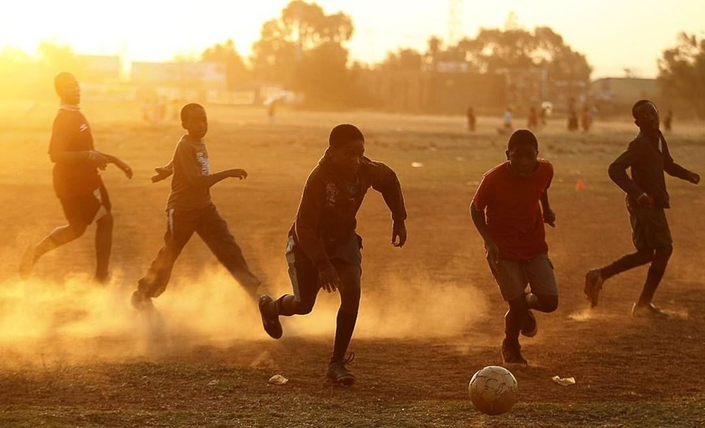

My mother told me that I liked playing volleyball around and had so much fun with it when I was only about two years old. Since then, playing volleyball is my favorite's sport and it is my hobby whenever I have free time. Playing volleyball also helps me to relax and be confident when I have stress and frustration. For example, after doing my homework I play a little bit with my friends at home grounds.

Football is the most popular sport in the world and is played in a lot of countries.I started to play football when I was ten years old.At first time,my father did not allow me to play football because he thought it would be dangerous for me.He used to bit me when he knew I had played football.But I did not give up because I like it.
